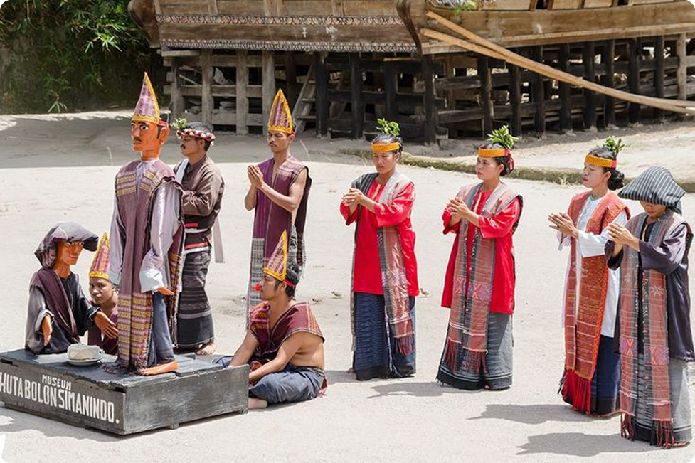

Budaya Batak Toba adalah bagian penting dari warisan budaya Indonesia. Budaya ini mencakup berbagai aspek kehidupan seperti sistem kekerabatan, adat istiadat, musik, tarian, dan berbagai tradisi yang masih dipertahankan hingga saat ini.
Dari filosofi hidup Dalihan Na Tolu, teknologi unik, hingga musik gondang dan seni tarian tortor, setiap elemen budaya Batak Toba sarat akan makna dan dipenuhi nilai-nilai luhur warisan nenek moyang.
Suku Batak Toba merupakan salah satu sub-suku utama dari kelompok etnis Batak yang mendiami wilayah tengah Sumatera Utara, terutama di sekitar Danau Toba dan daerah sekitarnya seperti Balige, Laguboti, Muara, hingga Pulau Samosir. Masyarakat Batak Toba memiliki budaya yang kuat dan khas, dengan sistem marga, adat istiadat, bahasa, serta kepercayaan yang diwariskan secara turun-temurun.
Menurut kepercayaan dan tradisi lisan masyarakat Batak, leluhur orang Batak dikenal dengan nama Si Raja Batak. Ia dipercaya berasal dari daerah Pusuk Buhit, sebuah gunung sakral di Pulau Samosir, yang dianggap sebagai tempat pertama kali kehidupan masyarakat Batak bermula. Dari Si Raja Batak inilah lahir dua keturunan utama: Guru Tatea Bulan, yang tetap tinggal di Pusuk Buhit dan menjadi nenek moyang Batak Toba, dan Raja Isumbaon, yang menyebar ke wilayah selatan dan menjadi leluhur sub-suku lainnya seperti Mandailing, Angkola, dan Pakpak.
Dari keturunan Guru Tatea Bulan, lahirlah marga-marga besar Batak Toba seperti Situmorang, Simanjuntak, Manurung, Nababan, Siregar, dan banyak lainnya. Marga menjadi penanda identitas utama dalam masyarakat Batak Toba dan sangat menentukan dalam sistem kekerabatan dan tata kehidupan sosial, termasuk dalam upacara adat dan pernikahan. Masyarakat Batak Toba menganut sistem patrilineal, yaitu garis keturunan diturunkan dari pihak ayah, dan setiap individu harus mengetahui marga serta posisi sosialnya dalam struktur adat.
Perkembangan budaya Batak Toba tidak lepas dari pengaruh sejarah, terutama ketika agama Kristen masuk ke wilayah Toba pada abad ke-19. Seorang misionaris Jerman bernama Dr. Ludwig Ingwer Nommensen menjadi tokoh penting dalam penyebaran agama Kristen Protestan dan mendirikan gereja HKBP (Huria Kristen Batak Protestan) yang hingga kini menjadi gereja terbesar di Tanah Batak. Meskipun nilai-nilai keagamaan baru mulai diadopsi, adat Batak Toba tetap hidup berdampingan dan mengalami penyesuaian, bukan penghapusan.
Hingga hari ini, meskipun modernisasi dan globalisasi terus berlangsung, masyarakat Batak Toba masih mempertahankan nilai-nilai budaya leluhur. Berbagai upacara adat seperti mangokkal holi (pemindahan tulang leluhur), saur matua (upacara kematian orang tua yang lengkap keturunannya), serta martumpol dan ulaon unjuk (proses pernikahan adat) masih dijalankan dengan penuh penghormatan. Budaya Batak Toba bahkan terus dibawa oleh diaspora Batak ke berbagai kota besar dan luar negeri melalui komunitas adat, pelatihan bahasa, serta pelestarian aksara Batak yang mulai diajarkan kembali kepada generasi muda.
Dengan memahami sejarah Batak Toba, kita tidak hanya melihat perjalanan leluhur secara geografis dan budaya, tetapi juga menyadari bahwa warisan ini terus tumbuh sebagai bagian dari identitas yang hidup dan berharga hingga hari ini.

Musik dan tari tidak hanya menjadi hiburan, tetapi juga bagian dari doa dan komunikasi spiritual. Gondang Sabangunan sebagai musik ritual yang dimainkan dalam acara adat, dengan alat musik tortor. Musik dan tari tidak hanya menjadi hiburan, tetapi juga bagian dari doa dan komunikasi spiritual. Gondang Sabangunan sebagai musik ritual yang dimainkan dalam acara adat, dengan alat musik tortor.
Musik dan tari tidak hanya menjadi hiburan, tetapi juga bagian dari doa dan komunikasi spiritual. Gondang Sabangunan sebagai musik ritual yang dimainkan dalam acara adat, dengan alat musik tortor. Musik dan tari tidak hanya menjadi hiburan, tetapi juga bagian dari doa dan komunikasi spiritual. Gondang Sabangunan sebagai musik ritual yang dimainkan dalam acara adat, dengan alat musik tortor.
Musik dan tari tidak hanya menjadi hiburan, tetapi juga bagian dari doa dan komunikasi spiritual. Gondang Sabangunan sebagai musik ritual yang dimainkan dalam acara adat, dengan alat musik tortor. Musik dan tari tidak hanya menjadi hiburan, tetapi juga bagian dari doa dan komunikasi spiritual. Gondang Sabangunan sebagai musik ritual yang dimainkan dalam acara adat, dengan alat musik tortor.